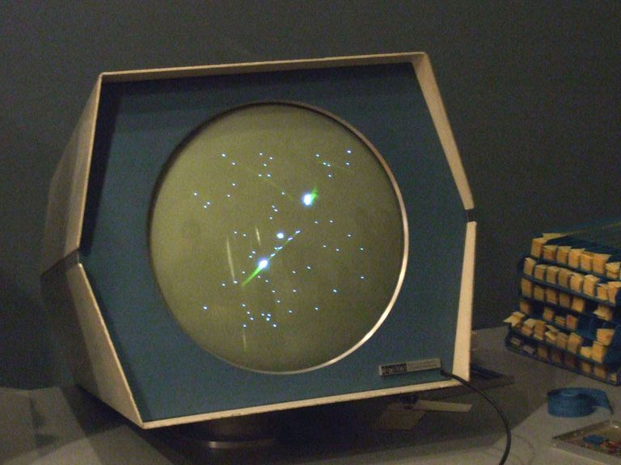
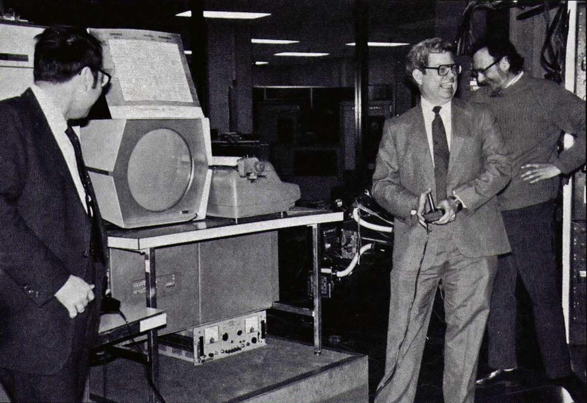
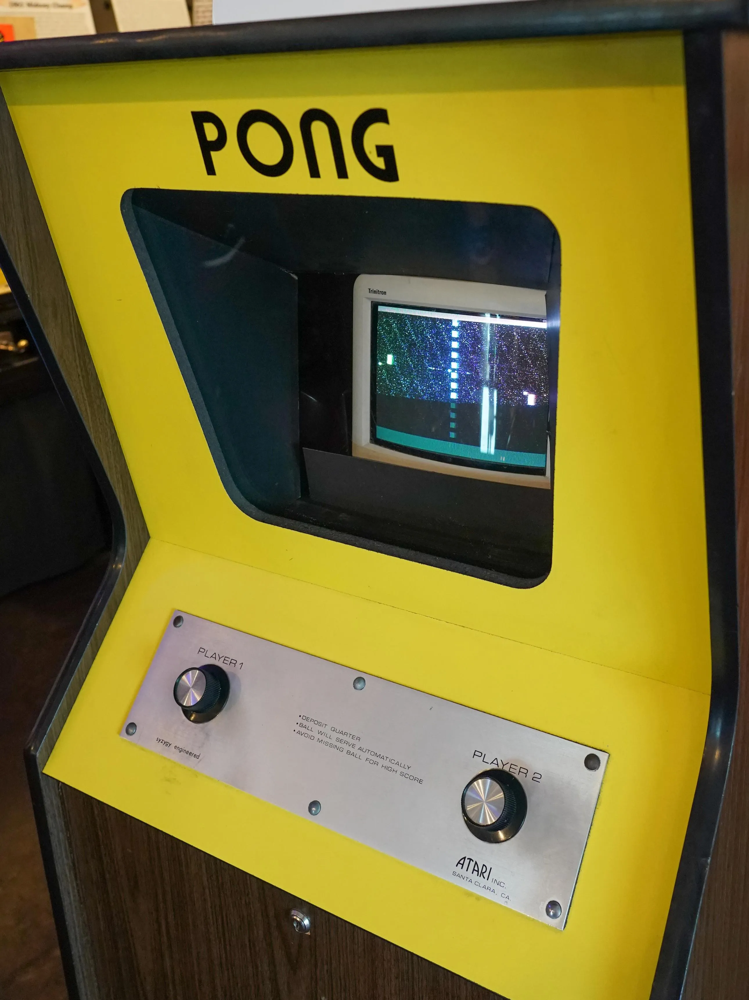
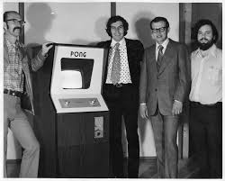
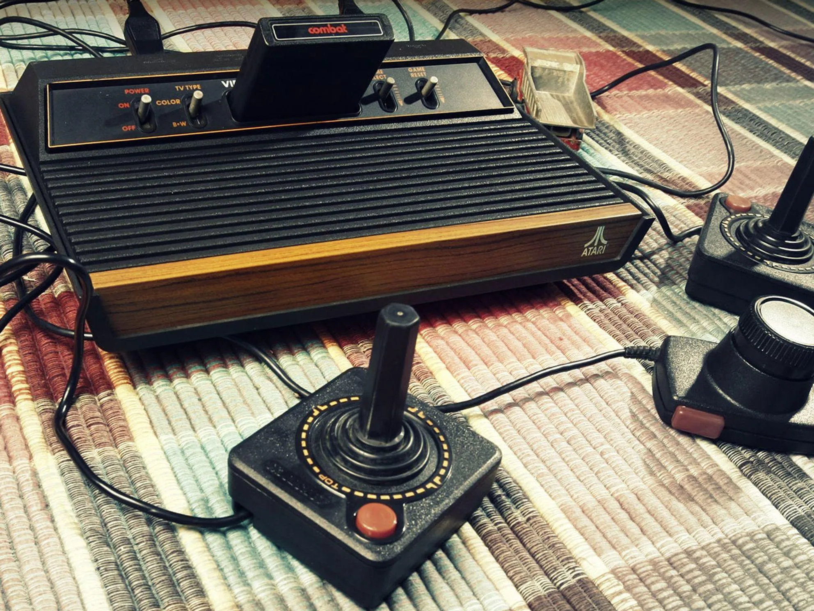
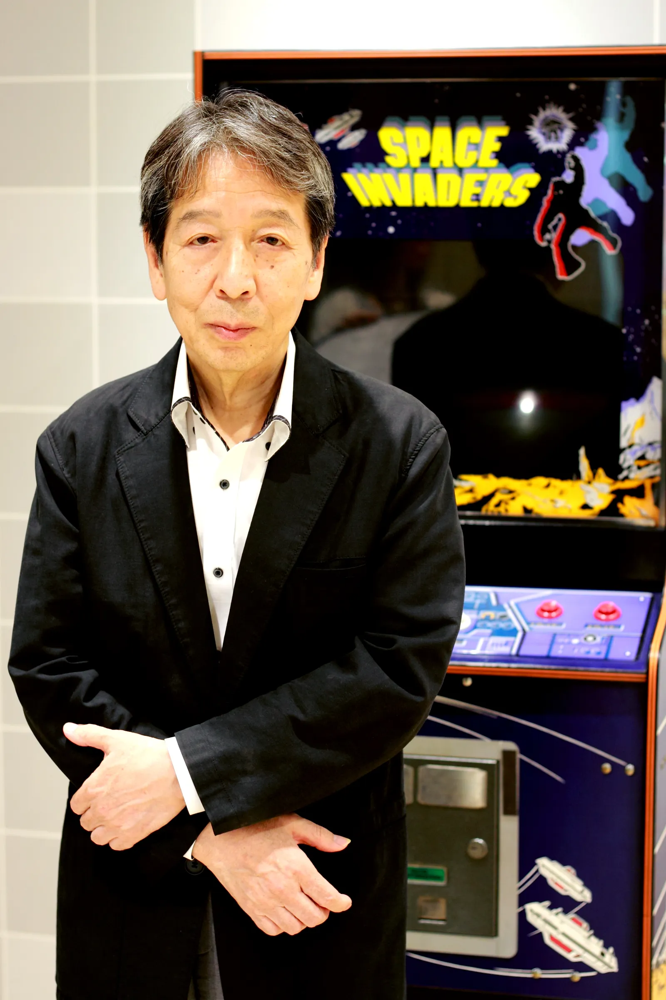

Bem vindo ao Museu do Videogame, onde você poderá acompanhar a linha do tempo da criação e da
evolução do mercado de jogos até os dias atuais.
Aqui você poderá saber mais sobre a criação do primeiro videogame comercial da história, o Spacewar
e também saber como ele originou o primeiro grande marco histórico da indústria, o Pong, além disso, você
também poderá acompanhar a evolução do mercado até ele se tornar mais acessível para o público geral, assim
como o crescimento das empresas conhecidas pela criação e distribuição dos jogos.
Sinta-se a vontade para explorar nossas exposições iniciais, sendo elas:

Computador rodando o jogo Spacewar!

Os criadores testando o jogo Spacewar!
Spacewar! é amplamente reconhecido como um marco na história dos videogames, não apenas pela sua inovação técnica,
mas também pelo impacto cultural. Desenvolvido em 1962 no MIT por Steve Russell, Martin Graetz e Wayne Wiitanen,
o jogo foi projetado para o computador PDP-1, uma máquina revolucionária para a época.
No jogo, duas naves espaciais duelavam ao redor de uma estrela central, cuja gravidade representava um desafio adicional.
Curiosidade 1:Spacewar! não foi criado para fins comerciais, mas como uma demonstração do potencial do PDP-1.
Os desenvolvedores queriam mostrar como um computador podia oferecer experiências interativas em tempo real.
Isso era algo inédito na época, já que a maioria dos computadores era usada apenas para cálculos matemáticos.
Curiosidade 2: A comunidade acadêmica abraçou a ideia do jogo como uma ferramenta de aprendizado.
Universidades que possuíam o PDP-1 compartilhavam o código de Spacewar!, permitindo que estudantes adicionassem novas funcionalidades.
Isso transformou o jogo no primeiro exemplo de uma cultura de desenvolvimento colaborativo, algo que hoje é comum no mundo do software livre.
"Spacewar! foi mais do que um jogo; foi uma revolução silenciosa que abriu as portas para o futuro da interatividade." – Steve Russell
Pong

Uma das máquinas originais do Pong

Os criadores do jogo Pong
Em 1972, a Atari lançou Pong, um jogo simples, mas revolucionário, que simbolizou o início da era dos videogames comerciais.
Projetado por Allan Alcorn como um experimento interno, o jogo rapidamente se tornou um sucesso global e pavimentou o caminho
para a indústria bilionária que conhecemos hoje. O impacto cultural de Pong não pode ser subestimado. Ele foi responsável por
popularizar os arcades, transformando-os em pontos de encontro sociais. Durante os anos 1970, bares, restaurantes e shoppings
investiram pesadamente em máquinas de arcade, e Pong era quase sempre o principal atrativo.
Curiosidade 1: O conceito por trás de Pong era baseado em um jogo de tênis eletrônico que Nolan Bushnell havia visto
no console Magnavox Odyssey. No entanto, a versão da Atari foi refinada para tornar a experiência mais acessível e intuitiva.
Por exemplo, ao contrário do Odyssey, Pong usava controles com potenciômetros que permitiam ao jogador mover as barras com precisão.
Curiosidade 2: A simplicidade de Pong era uma de suas maiores forças. O jogo envolvia apenas duas barras e uma "bola",
mas sua mecânica altamente viciante foi suficiente para capturar a atenção de jogadores de todas as idades. Apesar de não ter um "final", Pong
incentivava a competição ao exibir pontuações, transformando as partidas em verdadeiros desafios entre amigos.
"Pong foi o primeiro jogo a mostrar que os videogames não eram apenas uma curiosidade tecnológica, mas uma nova forma
de entretenimento com o poder de unir pessoas." – Allan Alcorn
Atari

O primeiro console da empresa Atari, o Atari 2600O fundador da empresa Atari, Nolan Bushnell
Fundada em 1972 por Nolan Bushnell e Ted Dabney, a Atari foi uma das empresas mais influentes na história dos videogames,
sendo responsável por transformar o mercado de jogos em um fenômeno global. Seu console mais icônico, o Atari 2600, lançado em 1977,
trouxe os videogames para dentro das casas das pessoas, marcando o início da era dos consoles domésticos.
Curiosidade 1: O Atari 2600 foi o primeiro console a permitir o uso de cartuchos intercambiáveis, revolucionando a maneira como os
jogos eram distribuídos. Isso deu aos jogadores a possibilidade de escolher entre uma biblioteca crescente de títulos, desde clássicos como Asteroids até aventuras mais criativas como Pitfall!.
Curiosidade 2: Apesar de seu sucesso inicial, o Atari enfrentou dificuldades durante o famoso Crash dos Videogames de 1983,
um colapso do mercado causado pelo excesso de jogos de baixa qualidade e pela falta de controle criativo. No entanto, mesmo após esse período turbulento,
a marca Atari permaneceu como um símbolo cultural importante na história dos jogos.
"O Atari foi mais do que uma empresa; foi o catalisador de uma revolução que mudou a maneira como o mundo se diverte." – Nolan Bushnell
Space Invaders
Uma das máquinas originais do Space Invaders

O criador do jogo Space Invaders
Lançado em 1978, Space Invaders, criado por Tomohiro Nishikado, foi um divisor de águas na indústria dos jogos.
O jogo desafiava os jogadores a defenderem a Terra contra ondas crescentes de alienígenas, em um cenário que introduziu
conceitos fundamentais como dificuldade progressiva e jogabilidade estratégica.
Curiosidade 1: O impacto de Space Invaders foi tão grande que, no Japão, as moedas de 100 ienes (usadas para jogar)
começaram a faltar em várias regiões. O governo precisou intervir para aumentar a produção de moedas, tamanha a popularidade do jogo.
Curiosidade 2:Space Invaders foi pioneiro no uso de música dinâmica para intensificar a experiência do jogador.
À medida que os alienígenas se aproximavam, o ritmo da música acelerava, criando um senso de urgência e tensão que até então era inédito nos jogos.
Esse recurso inspirou muitos outros títulos a explorarem música como uma ferramenta narrativa.
"Com Space Invaders, os jogos deixaram de ser apenas uma diversão casual para se tornarem uma forma de arte imersiva e emocional." – Tomohiro Nishikado